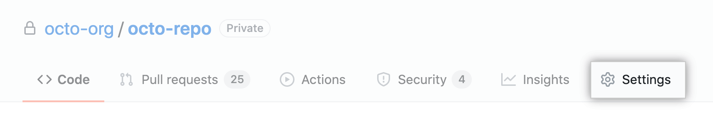
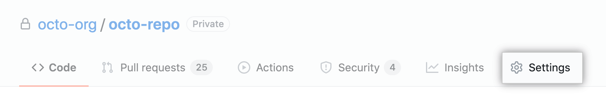
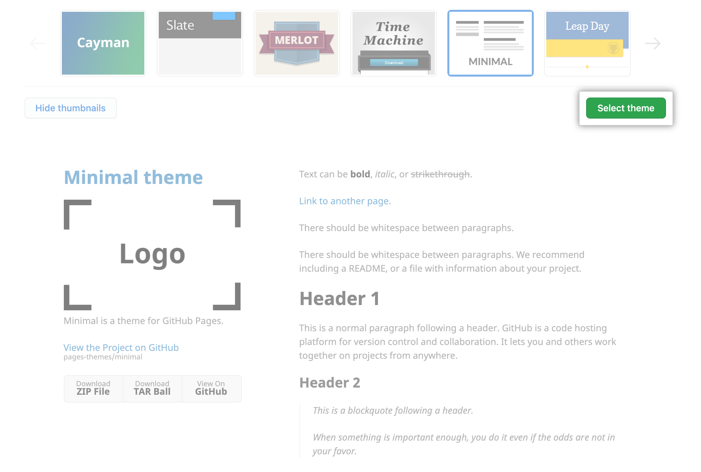

作者：forxhunter
制作一个Project说明文档¶
成品大概长这个样子，网站链接
首先，默认你会一些基本的GitHub操作指南。如果不会，请注册一个账号，参考QuickStart教程。
创建一个Repo¶
大部分翻译自：https://docs.github.com/cn/pages/quickstart 1. 在任何页面的右上角，使用 下拉菜单选择 New repository（新建仓库）。
-
输入
username.github.io作为仓库的名字。记得替换
username成你的名字。例如，如果你的名字是octocat，那么仓库名字就是octocat.github.io。当然，根据我的测试也可以起任何别的名字
 3. 在仓库名称下，单击 Settings（设置）。

4. 左侧边栏中，往下滑选择Pages。
首先，选择Source。一般选择
3. 在仓库名称下，单击 Settings（设置）。

4. 左侧边栏中，往下滑选择Pages。
首先，选择Source。一般选择main/doc。然后，需要选择一个主题。单机Theme跳转。如果不确定，就先随便选一个。  5. 选择主题后，您的存储库
README.md文件将在文件编辑器中打开。该README.md文件是您为网站编写内容的地方。您可以暂时编辑文件或保留默认内容。 6. 完成文件编辑后，单击Commit changes。 7. 访问username.github.io以查看您的新网站。
注：对站点的更改在发送到 GitHub 后，可能需要 20 分钟才会发布。
如果网站地址不是username.github.io，那么可以回到设置Settings里面的Pages页面，最上面会显示该repo对应的网址。
更改标题和描述¶
鉴于这个不是重点，请参考官方文档的描述
安装mkdocs并部署¶
通常，我们希望能创建一个侧边栏显示相关内容，但Gitpages的默认主题都只有顶边栏。如果觉得都可以，那么剩下的步骤都可以掠过了。
首先，放上MkDocs的官方网站
- 安装mkdocs包
pip install mkdocs
注：如果您发现任何错误，或者你都没有pip。请参考官方说明
命令说明：
mkdocs --help
-
将您的仓库克隆到本地便于操作。
-
打开命令行，cd进入仓库中，创建
mkdocs.yml文件使得你的Pages支持mkdocs。 相关文件逻辑如下：
./
mkdocs.yml # configuration file
docs/
index.md # homepage
... # other files needed
更改mkdocs.yml中内容:
site_name: MkLorum # 网站的名字
site_url: https://example.com/ #输入你的网址
这两个是必须的配置，随后你就可以选择配置。
- 侧面栏的配置
在
mkdocs.yml中：
#这是这个网址的例子
site_name: 物理学知识自学指南和笔记
theme:
name: material
repo_url: https://github.com/forxhunter/PhysicsDIY/
nav:
- 前言: 'index.md'
- 复杂系统:
- 'Phase Transition & Renormalization Group': 'ComplexSystems/PTRG.md'
- '非线性动力学和混沌' : "ComplexSystems/NonlinearDynamics.md"
- 网站搭建:
- 'GitPages' : "WebBuilt/GitPages.md"
在nav中加入一级栏和二级栏。相关文件夹和markdown文件需要放在docs中。
5. 修改仓库的地址
进入仓库的Settings，Page设置：
将Source中Branch修改为gh-pages的/(root)
点击Save。 6. 做好任何修改后，使用命令
mkdocs gh-pages
然后登陆你的账号，就没有然后了。 后续可以通过配置自动更新，这样只需要把main的修改同步到在线的仓库里面就行。（参加下文）
配置自动更新by_Actions¶
参考文章:@SquidFuck
1. 通过网站进入到之前创建的仓库，点击Actions。
2. 创建一个叫做ci.yml的Action。
将以下代码复制到里面，点击部署，部署到mainbranch.
name: ci
on:
push:
branches:
- master
- main
jobs:
deploy:
runs-on: ubuntu-latest
steps:
- uses: actions/checkout@v2
- uses: actions/setup-python@v2
with:
python-version: 3.x
- run: pip install mkdocs-material
- run: mkdocs gh-deploy --force
3.等价的，也可以直接创建一个目录.github/worflows在你的仓库中，然后在里面创建一个叫做ci.yml的文件。
然后将上面的代码复制进去，然后保存。最后记得commit+push
成功后的效果是这个样子的，如果你自动push代码到main分支中，这段代码可以自动将页面配置好，传到gh-pages分支。
注：如果刷新后页面没有更新，可以清楚浏览器缓存数据后，再次刷新。
插入图片¶
建议创建一个template.asset的文件夹，放入图片。
引用时务必严格使用格式./template.asset/example.png，一定不能使用\。